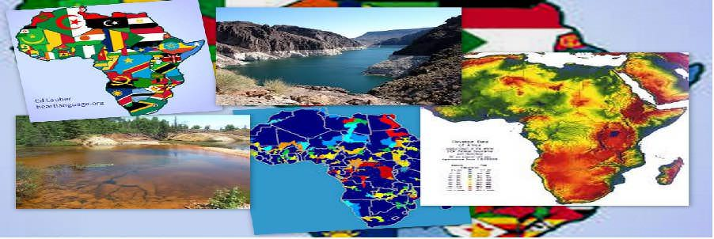
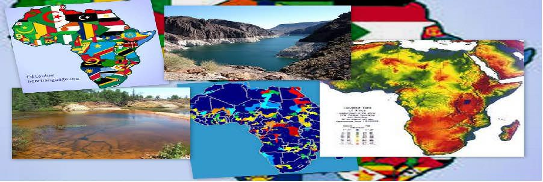

Case Study
Learning from past, Improving the Future...
 



CASE STUDY - ITALY
Italian Province Tackles Hydrological Hazards with GIS & Remote Sensing :
The autonomous province of Bolzano is located in northern Italy and shares a boundary with Austria. With a surface of 7,400 square kilometers, Bolzano is mainly mountainous, its elevation ranging from 200 to more than 3,800 meters above sea level (ASL). Bolzano's Department 30 is the province's agency in charge of resolving the conflicts between natural environment and human needs. Specifically, Department 30 manages the construction and maintenance of engineering measures for the mitigation of hydrologic and geologic hazards, such as check dams & drains.
For this purpose, in the past years, the province has designed and implemented several GIS geodatabases that include generic datasets, such as digital elevation models, land cover, land-use maps, and orthophotography. Also included were more specific datasets, such as the inventory of historic floods and debris flood events and the inventory of the hydraulic structures already in place. A specific framework project called the Information System for Hydrogeological Hazards and Risks (IHR), sponsored by the European Commission among others, was devised to make the information needed in risk management accessible to Bolzano's planners in a simple and standardized way.
As part of the IHR project, the Basin System Information of Department 30 (BaSIn 30) application was designed to simplify the extraction, at the watershed level, of the most relevant information for the purpose of planning new hydraulic structures.
Since most of the department's flood managers were already familiar with the ArcGIS Desktop software platform, BaSIn 30 was implemented as an ArcGIS Desktop extension. The input data required by BaSIn 30 is all spatial and includes general layers about land use, geology, and morphology and more specific layers about the hydrologic network, hydraulic structures already in place, and hydrologic hazards.
CASE STUDY - AFRICA
African Water Resource Database uses GIS & Remote Sensing:
The African Water Resource Database (AWRD) includes an extensive archive and GIS tools designed to facilitate responsible inland aquatic resource management with an overarching goal of food security.
Information stored in the data archive includes surface water bodies, watersheds, aquatic species, rivers, political boundaries, population density, soils, satellite imagery, and physiographic and climatological data. AWRD was designed for use by administrators, technical professionals, spatial analysts, teachers, and students.
AWRD was designed based on recommendations from the Committee on Inland Fisheries and Aquaculture for Africa and is both an expansion and an update of an earlier project led by the Aquatic Resource Management for Local Community Development Program, called the Southern African Development Community Water Resource Database.
To display and analyze the archival data, AWRD contains custom applications and tools programmed to run under ArcView. The database allows integration of different types of information into a cohesive program that, because of its visual nature, is easy to understand and interpret.
The database publication is presented in two parts: concepts and application case studies, and a technical manual and workbook. The primary AWRD interface, toolsets, and data integral to the function of AWRD are distributed in two DVDs accompanying the technical manual and workbook.
CASE STUDY-RUSSIA
Due to the advanced spatial visualization and analysis capabilities of GIS, researchers at Saint Petersburg Electrotechnical University (ETU) in Russia are able to map and study natural water bodies; their polluters; the source, location, and levels of polluting agents; and the content of the pollutants. Their analysis of natural water bodies and industrial enterprises provides the opportunity to predict the level of industrial impact and study various scenarios to make recommendations for rational use of natural water resources.
A Water Body of Investigation
The GIS-based monitoring system was established on part of northwest Russia's Neva River, located in the Kirovsky District of Leningrad Oblast. The Neva River is an integral part of the region's aquatic system, which also includes Onezhskoe Lake, the Svir River, Ladozhskoe Lake, Nevskaya Guba Bay, and the eastern part of Finsky Bay. This entire aquatic system is affected by an industrially developed area that serves as the main source of pollution. The Neva River receives wastewater discharged from municipal wastewater treatment plants, untreated wastewater, and effluents coming from industrial and agricultural enterprises located near its banks.
Data from the Neva River findings is stored in a GIS-based information medium assessment system, which is designed to perform hydrochemical analysis of water body quality to assess the adverse impact produced by humans and to set permissible levels of the ecological load on water resources. Its ArcGIS Desktop platform provides integration and use of the distributed information, while enabling users to process the data depending on which sphere (geographic or administrative) it relates to. The information medium consists of a topographic base arranged in the form of GIS layers, a model base of natural bodies and enterprises, databases with the results of monitoring, and analyzing activities and a regulatory framework.
CASE STUDY-FLORIDA
Florida Aquifer Vulnerability Assessment Uses GIS:
Recently developed GIS-based aquifer vulnerability models provide valuable groundwater protection tools with wide-ranging applications throughout Florida. Intended to enhance protection efforts for Florida's fragile drinking water resources, the models provide new options for community planners, public works staff, environmental professionals, storm water and wastewater engineers, and local governments. These models are extensively used in many areas, including land-use planning, identification of recharge areas, wastewater planning, wellhead protection, identification of environmentally sensitive areas, storm water management, and spring protection.Aquifers are among the most important sources of drinking water in the United States. In Florida, an estimated 90 percent of drinking water is derived from aquifers, so identifying areas where aquifer systems are more vulnerable to contamination is an essential component of a comprehensive groundwater management and protection program.
The project that emerged was named Florida Aquifer Vulnerability Assessment (FAVA).The primary goal of the FAVA project was to provide a scientifically defensible water resource management and protection tool that facilitated land-use planning to help minimize impacts on groundwater quality. The project's designers sought to generate meaningful and useful tools to help ensure balanced protection and future use of groundwater resources by characterizing the natural vulnerability of aquifer systems.
ArcGIS Desktop was selected as the development platform for the FAVA project because of the state's existing investment in the software suite. After careful assessment of available modeling techniques that would best suit an aquifer vulnerability analysis, the Arc Spatial Data Modeler, or Arc-SDM, was also selected.Arc-SDM consists of geoprocessing tools used to generate predictive maps describing probabilities of occurrences of specific events in a study area.
CASE STUDY-TAMPA BAY
Tampa Bay Water Deploys GIS to Model Potable Water Distribution:
Tampa Bay Water, a regional water authority whose jurisdiction includes three heavily populated counties in Florida (Hillsborough, Pasco, and Pinellas), is responsible for providing potable water to the Tampa Bay area's regional member government utilities. These local governments include Hillsborough County, City of New Port Richey, Pasco County, Pinellas County, City of St. Petersburg, and City of Tampa.
Tampa Bay Water relies on GIS for various aspects of its operations. Most notably, GIS is used to manage the regional water supply source rotation, which helps minimize impacts to its groundwater and surface water supplies, as well as the surrounding wetland and aquifer systems of the region.
In June 2007, Tampa Bay Water was tasked by its member governments to develop a high- resolution water distribution (consumption) application to analyze where and how the potable water was being used in the region. This application, named GOVNET, would become the basis for managing all future water conservation efforts.GOVNET's functionality includes the ability to view, analyze, and query time-series water consumption data at various resolutions (regional, city, neighborhood, street, parcel) and retrieve charts, graphs, and reports for water demand. The successful implementation of GOVNET became possible because Tampa Bay Water had diligently collected time-series billing data from its member governments on a monthly basis from 1998 to the present at an account level.
Tampa Bay Water is exploring future applications to the GOVNET framework, including incorporating conservation program data to allow demand managers to see how responsive water consumption is to targeted conservation measures over time. Using this targeted approach to conservation will help ease water demand for Tampa Bay Water and help further its goal of a reliable and sustainable water supply for generations to come.
CASE STUDY- INDIA
TUTICORINThe Ottapidaram taluk lying between latitudes N 9°3’14” and 8°48’33” longitudes E 77°47’04” and 78°12’53” the major source for groundwater in the study area is rainfall during monsoon season. The present study area is Ottapidaram Taluk, Tuticorin District, Tamil Nadu and India. The problem of the present study is a representative case of over exploitation of groundwater resources, leading to the continuous exhaustion of the grained as well as the groundwater aquifers. The application of the increasingly and internationally accepted method of artificial recharge on the groundwater aquifer was decided to be the most effective for the restoration of balance of the hydrogeological system.
The satellite data of IRS LISS III were classified using supervised classification technique. Land use/Land cover map and Geomorphology map spatial distribution map prepared through ERDAS image processing software. The land use classification adopted in the present study is based on National Remote Sensing Agency classification. The Geology map was collected from the Geological Survey of India, traced, scanned and digitized in GIS.
The Groundwater recharge of the Ottapidaram Taluk is the result of an interaction between geomorphology and water level in the process of permanent adjustment between constraining properties. The high favorable zone noticed at north to eastern side and covers an area about 40.81 km2 of locations like Tharuvaikulam and Pudur Pandiyapuram are highly potential and artificial recharge zones in the study area. Followed by the moderately suitable area for recharge zone covers an area about 638.42 km2 of the total study area. The remaining areas of 64.37 km2 are free from the limitation of the problem because of these areas naturally fall under the active agricultural land. This alarming situation calls for a cost and time-effective technique for proper evaluation of groundwater resources and management planning. Thus, GIS had been proved to be essential in aquiring knowledge about groundwater in the region.
CASE STUDY- INDIA
BILWARABhilwara is situated between 25°.00' to 27°.50' North Latitude and 74°.03' to 75°.25' East Longitude. The project for sensing grounwater reserves was felt in this region. In this project both satellite data as well as extensive field data were used for preparation of various thematic maps. As far as satellite data is concerned IRS-1D LISS III image was used for the interpretation and analysis.
This study was carried out for some parts of Bhilwara district, Rajasthan to explore the groundwater prospects of the area. All the hydro-geological themes was created by the interpretation of satellite data and subsequently verified by field check. Apart from this, a hydrological and base theme was also created in GIS. All the themes was integrated and analyzed to prepare the groundwater prospects maps. Based on the hydrogeology and drainage pattern, suitable site for recharge structures was suggested in the map.
GULBARGAStudy area Gulbarga is a fast developing city in northern Karnataka state of India. The City is situated at Latitude of 17°17’ to 17° 22’ and Longitude of 76° 47’ to 76° 52’.The study area was felt necessary as chronically drought prone district of the Karnataka state, due to less and variable occurrence of annual rainfall which puts onus on exploitation and management of the sub surface water.
Various physico-chemical parameters like chloride, nitrate, TDS, and hardness were analyzed in the groundwater samples used for drinking purposes and their levels in different locations of the study. GIS proved to be an extraordinarily beneficial system in this region. The rapid growth of urban population in Gulbarga city led to unplanned settlements where the access to sewerage is limited. The main sources of nitrate and other pollutants of urban groundwater is sewage and nitrate can reach the aquifer by sewer. But the information revealed by GIS suggested various measures for further improvements.